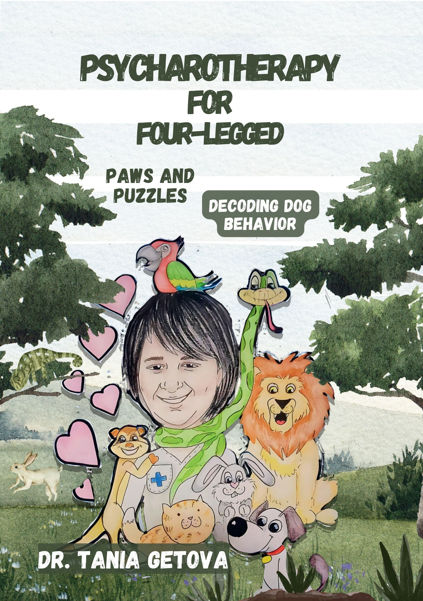
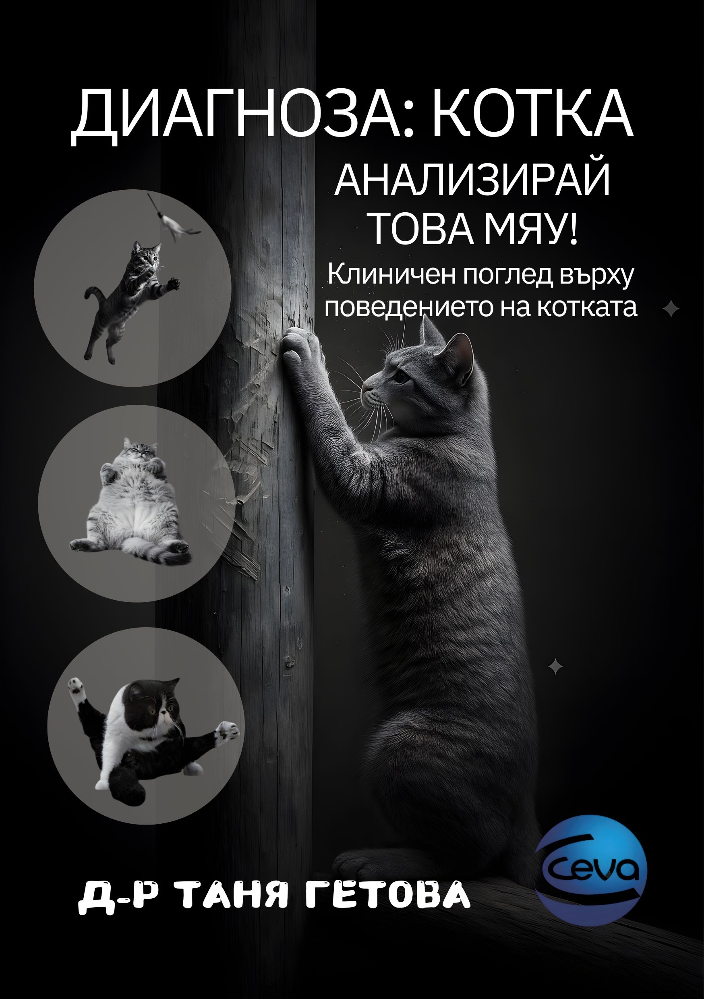

ПсихарOтерапия за Четириноги | Лапи и Пъзели - Шифърът в поведението на кучето
Всеки магьосник може да говори с животните. Искате ли да научите езика на животните, да погледнете света през техните очи?
Знание и страст
За всеки собственик и любител на миниатюрния пинчер – подбрана селекция от книги за породата, развъждането, обучението и грижите.

Всеки магьосник може да говори с животните. Искате ли да научите езика на животните, да погледнете света през техните очи?

Старата поговорка „Колкото повече знаеш, толкова повече осъзнаваш, че не знаеш“ напълно подхожда на котките. Тайни и послания.
Освен книгите, тези онлайн ресурси също заслужават вниманието на всеки собственик и развъдник.
Официален международен орган. База за стандарти на породите и глобални развъдни правила.
Българска федерация по кинология за издаване на родословия и администриране на локалната развъдна дейност.
Най-голямата глобална база данни за здравни сертификати (дисплазия, очи, сърце) и генетичен скрининг.
Водещи ДНК тестове (за над 250 генетични заболявания), определяне на локуси за цвят и точен COI.
Интегрирана информационна платформа, обединяваща данни за здравето и списъци с лаборатории по породи.
ERP софтуер за мениджмънт на развъдници (родословия, кучила, генериране на COI и финанси).
Отворена база данни на Финландския кенел клуб. Отличен инструмент за проследяване на линии.
Най-големият онлайн ветеринарен справочник за бърза справка при симптоматика и спешна помощ.
С радост ще ви препоръчаме литература за конкретна тема – от развъждане до обучение.
Свържете се с нас